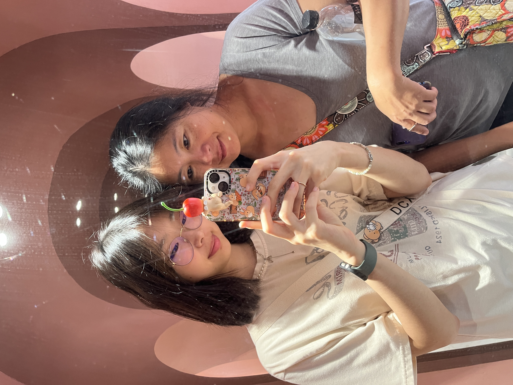
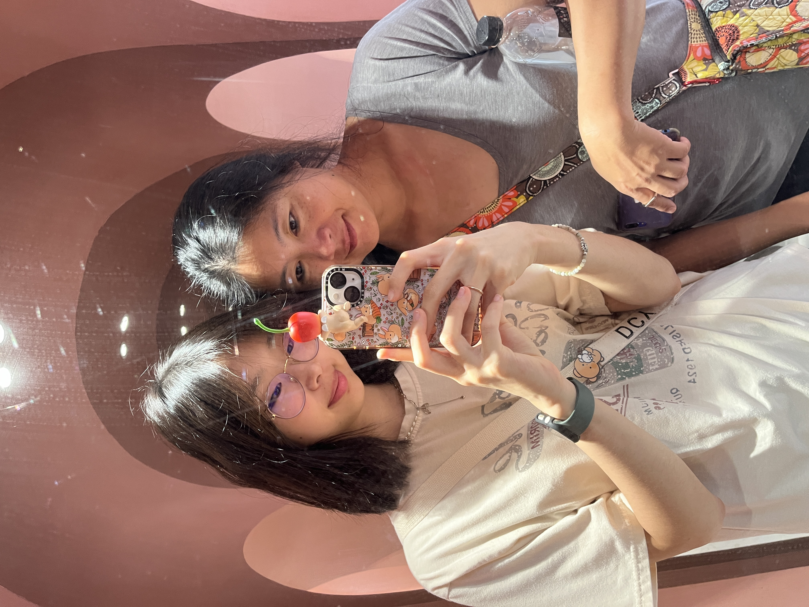

About
Hi! My name is Huan, like Prince Hans from Frozen but without the “S.” I’m a sophomore at the University of Michigan, studying the intersection of math, science, and art. To my friends, I’m an empathetic listener who loves good food, new adventures, and always adopting the glass half full mentality. To my family, I’m a caring daughter of two immigrant parents who have always supported my dreams. To myself, I’m a curious anomaly: someone who finds joy in both creative expression and logical problem-solving. I hope to bring that same mix of heart and logic into every project I take on.